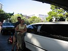

|
|
|
lornaland.co.uk Holidays Photo Gallery Lornaland Natter USA 2005 Journal Menu...New YorkBoston Cooperstown Buffalo Las Vegas Death Valley Yosemite National Park San Francisco San Simeon Los Angeles San Diego Las Vegas Pictures Grand Canyon Pictures |
Las Vegas12th - 15th September 2005Monday 12th September 2005 (...by Dan)Today I was rudely awakened by an alarm call at 6.00am (Eastern) which scared the bejesus out of me. Bellies still full from the night before, we struggled to cram all our stuff into the cases for the flight to Vegas. The extra shoes, cider and three bottles of maple syrup didn't make this any easier. Finally we were ready and dragged everything down to the car. Getting to the airport was quick and easy - the hire car lady scanned us with a bar code reader and had a bill printed 3 minutes after we pulled up. We paid over the odds for half tank of gas after not realising we had to hand it back full, but it was still less than half the UK price! All checked in, we went to find some food and ate the most disgusting egg rolls in the world. I had a coffee too which was much better. The plane to Cleveland was tiny, only three seats across. The flight lasted for a about half and hour. The first beer of the day, which turned out to be the only beer of the day, was at Cleveland Airport. I had a Sam Adams and Lorna had her second beer, another Corona with a lime in the top. Cleveland to Vegas was a crushingly boring four hour flight, but the time difference gained us three hours back. Landing gave us a first glimpse of the hotels on the strip - the Luxor standing out the most. After a short wait we met our limo driver who gave us a tour of the strip and a bottle of champagne along with a few hints and tips on where to go. We saw the sights along the strip and enjoyed the whole limo experience. Finally we arrived at the Bellagio and our poor driver, who looked like she used to be a dancer struggled to get our bags out of the boot!  The room here at the Bellagio is amazing, probably slightly larger than the ground floor of our house! But as I'm off in the shower now, Lorna will continue... ... by Lorna Vegas Baby! The Bellagio is another world - a world of sheer luxury. Our room is gorgeous and huge. The bed is fantastic, we've got a sitting area with a table and two comfy armchairs, there's a massive "mini" bar full of tempting treats (which of course are at luxury prices) and a big mahogany cabinet housing two wardrobes, TV, ironing board and a safe. Then of course there's the bathroom which is bigger than our whole bedroom at home with a shower cubicle bigger than my Mam & Dad's toilet! We don't even have to get out of bed to open the curtains as there's buttons by the bed to do all that for you. When we finally got over the room (No.21027) we went downstairs to explore the casino. I had my first play on the slot machines before our bellies instructed us to go and change for dinner. Tonight's dinner was courtesy of the Bellagio buffet. Before we ate, we went out onto the strip to catch a fountain show. We found a good spot and waited for the 7.00pm showing. The Bellagio fountain show is famous in Vegas but they weren't what I was expecting. We watched the "one" performance and I was completely mesmerized. It was totally amazing how graceful they were. I never dreamed that water could do that! Feeling all happy we wandered off to dinner.
Tuesday 13th September 2005I can't believe I'm going to say this but Oh My God the bed is so comfortable, even better than our own bed! I had a really good nights sleep, the best I've had since we arrived. We had a nice lie-in and lazy morning which meant we didn't actually see sunlight till after 12.00pm. Our plan today was to head down to see the Luxor, passing through the Monte Carlo and Excalibur on the way. Although all the hotels have a different theme, once on the casino floor they all look the same. After a quick lunch snack in the Excalibur we headed to the Luxor. We wandered around the casino bit getting lost and trying to find the inside of the pyramid when we came across the poker room and noticed that they had a poker lesson starting soon so we hung about. The lesson itself was free and although we knew the rules of poker, it was really good as it explained how to play poker in a casino. After a 15 minute lesson, we started to play for real It was a $20 buy-in for 20 $1 chips with the blinds set at $1 & $2. We both signed up and then I got scared. It felt very strange playing for money for real and I was worried I would forget all the hands. It took me a while to actually play a hand being too scared. I had a couple of times when I decided to see it though but of course I ended up losing. My luck did change when I was down to my last chip and by some miracle I won! I won a other couple of hands but I was soon out completely. I'd lasted 1.5 hours on my $20 so I didn't feel too bad. Dan had already bought in another $20 so I left him to it and wandered round the casino. When I returned half and hour later Dan was already gathering his chips to leave having managed to win back his second $20 plus $8. Not too bad for our first attempt. We wandered back towards the hotel on the other side of the strip. We wandered into MGM Grand and saw the MGM lion who was gorgeous. We jumped on the monorail and headed down to the Venetian. We wandered through the shops and saw the daylight ceiling over the Grand Canal which was very strange. Some of the gondola men were singing which was very cool. We had a yummy cocktail in on of the bars before heading back to change for dinner. Tonight we'd decided to head downtown to visit Fremont Street. It was a bit of a culture shock compared to the strip. After an enormous Mexican dinner (even though we'd tried to order less) we watched the Fremont Street Experience and then headed into a casino to gamble. We went into the Golden Nugget and Binnions before finding a 50 cent roulette table in the 4 Queens. The dealer must have known cos she gave me lucky pink chips. They were indeed lucky as I managed to play for 45 minutes, enjoy four free drinks (plus four for Dan) and leave with my original $20 stake.
Wednesday 14th September 2005 (...by Dan)Another rude awakening this morning, alarm call went off at 5.30am. We dragged our groggy selves out of bed after only four hours sleep. Getting ready took and hour or so, then we threw camera stuff in the bag and headed to the underground tour lobby. The bus was on time and our journey to the Grand Canyon had begun. At Vegas North Air Terminal we started waiting around for the first time, but by no means the last! We got chatting to a number of other couples, as is the case with Brits abroad. Eventually we were called to board a tiny twin engined plane bound for the Hualapai (pronounced "wall o' pie") Indian Reservation on the west canyon rim. We flew over Lake Mead, the huge lake created by the Hoover Dam. It's an incredible sight. The water looks so out of place in the middle of an endless desert. I'd expected to see greenery around the water's edge but this was not the case, just blue and yellow. The flight also gave us a sneak preview of the Canyon which is just too big to describe, too big to comprehend really! On arrival at the Hualapai airport we begun waiting around for the second time. Eventually we were loaded onto a helicopter and began our descent to the Canyon floor. The Grand Canyon is deep enough to hold two Empire State Buildings stacked on top of each other however it's impossible to judge it's depth when you're there. My ears popped twice on the way down but it was hard to tell how high we were, or how close we were to the cliffs. There is a green border to the Colorado River, which looked like grass from the top, but on landing we found it to be a loose collection of scrubby trees and bushes, some taller than me. The river itself was brown which our boat driver told us was due to a recent thunder storm which had washed tonnes of mud and silt into the river - making the Canyon a little bigger in the process. The boat trip itself was short and sweet but our guide had some interesting facts to tell us about the Canyon and the surrounding area. One interesting fact was that the increased demand for water in the rapidly expanding Las Vegas had caused a drop in the water level of Lake Mead and the river. I blame the Bellagio fountains! After the boat trip, we headed back out of the canyon in our helicopter. The trip on the way back took a little longer and we had more time to appreciate the beauty of the canyon walls. The next wait was fro the bus to Eagle Point, a lookout high on the canyon edge. There was no rail or fence at the edge and Lorna delighted in scaring myself and the others by going close to the edge! A flock of ravens shot past my ear within a couple of feet, no doubt to show off. Next stop was a mock Indian village with examples of different styles of native dwellings. Some were much more comfy than others. The more northern tribes made houses out of huge logs which were large and cool in the sun of the Arizona desert. The funniest part of the day was when we were treated to a demonstration of some Hualapai dances. This was interesting because I doubt a single dancer was under the age of 90! They obviously either didn't want to be there or they didn't quite know why they were there and all looked very happy when our tour group applauded and ran away! The final destination was the bizarrely named Guano Point (Bat Poo Point) which had a stunning view of the canyon on three sides. There was a small hut where the Hualapai were serving a "traditional" buffet. I'm not sure how traditional roast beef, corn bread and coleslaw are, but they were nice. The peach pie was great too. We headed back to the airstrip and we both fell asleep on the plane ride home, the early start had really taken it out of us. The less said about the coach ride home the better, but eventually we arrived back at the Bellagio. After a couple of hours relaxing by the pool we felt much better and after changing, went out to dinner. We wandered along the strip taking in all the free shows and displays outside the hotels on the way. The Bellagio fountains were great as usual but the music was "Proud to be an American" which is sickening in every way.
We ate a posh Mexican at Ilsa Mexican Kitchen before heading to Tangerine, the very snazzy nightclub in TI. It was very expensive and by now we were getting very tired so we enjoyed one drink on the balcony (where we watched the epic strippers-v-pirates battle from a different angle) then headed home and passed out! Thursday 15th September 2005Our last full day in Vegas. We spent the morning in bed with a nice lie-in before spending a few hours by the pool The pools were gorgeous, a nice mixture of big to swim in, little pools to splash in and some nice hot tubs. After a couple of hours of sunbathing and a spot of lunch, we headed back to our room to change ready for some poker action. Feeling lazy (and in a rush) we got a cab from the hotel to the Luxor, arriving at 2.30pm. We spent the next 2.5 hours giving the casino $100 of our money in return for a few "free" drinks - cosmopolitans to be precise and very yummy ones too. By 5.00pm I realised that I wasn't going to win anything big so I decided to cash out and leave with my last $20 which made me feel a bit better. Unfortunately, Dan had already lost all his $60 and had been watching me play. We headed back along the strip to the hotel stopping in a couple of souvenir shops on the way where I purchased my CSI T-shirt, and new holdall for all our overflow stuff. Back in the hotel and we just had time to dump our stuff before having to head down to the underground tour lobby to be picked up for our night helicopter flight over the strip. Unlike yesterday's tour, we were departing from McCaran Airport. We arrived there quickly, were checked in and then given some free champagne. An hour and five glassed of champagne later we boarded a bus to take us to the heliport. When we boarded the helicopter I realised that my run on front seats had ended and was sat in the back next to Dan which made a nice change. The flight lasted about 10 minutes and the only disappointment was that the tour up and down the strip was done in such a way that the opposite side of the helicopter to us got all the views. Apart from that (and the long wait) it was a good flight, Vegas looks so different at night and from the air. Once we landed it was back on the bus and off to the hotel. Luckily, the Bellagio was the first stop and we arrived just before 9.00pm. It was a quick change as we had reservations at Jasmine for 9.30pm but we made it with 10 minutes to spare and enjoyed a drink in the bar while we waited (whereby I was ID'd for the first time this trip!) The restaurant was very posh. Dan had a heart attack while looking through the wine list when he realised the price of some of them, there were wines for $2,000 a bottle and up. Funnily, the one we ordered was a mere $62. The food was gorgeous. We had lobster dumplings and shredded pork in pancakes to start followed by duck and beef with rice. We even managed to squeeze in desserts. My creme brulee turned out to be a little medley of four different brulees all in little bowls. It looked (and tasted) lovely. Dan had one of the chefs prize winning desserts which I understand was worthy of it's reward. It all came to $275 including tip but it was worth it. After dinner we watched the last two fountain shows before heading for bed. |
 The buffet was again OTT. The selection of food available was great and though slightly heavy on the
fishy side for me, I was very impressed. We managed two courses of mains and a dessert.
The buffet was again OTT. The selection of food available was great and though slightly heavy on the
fishy side for me, I was very impressed. We managed two courses of mains and a dessert.
 After dinner we wandered South along the strip and decided to venture into the
After dinner we wandered South along the strip and decided to venture into the  Next stop was the volcano at the
Next stop was the volcano at the